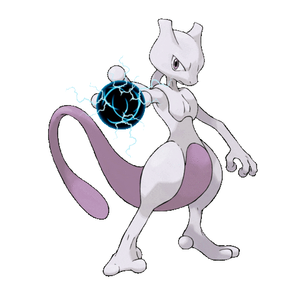

-
Phantump #016
- Fantasma
- Grama
Depois que uma criança perdida morreu na floresta, seu espírito possuiu um toco de árvore, causando o renascimento do espírito como este Pokémon. Com uma voz como a de uma criança humana, ele clama para atrair os adultos para as profundezas da floresta, fazendo-os perder-se entre as árvores.
-
Onix #017
- Pedra
- Terra
À medida que escava o solo, absorve muitos objetos duros. É isso que torna seu corpo tão sólido. Ele perfura rapidamente o solo a 80 km / h, contorcendo-se e torcendo seu corpo maciço e robusto.
-
Giratina #018

- Fantasma
- Dragão
Diz-se que este Pokémon vive num mundo do outro lado do nosso, onde o conhecimento comum é distorcido e estranho. Foi banido pela sua violência. Ele silenciosamente contemplou o velho mundo do Mundo da Distorção.
-
Hydreigon #019
- Escuridão
- Dragão
Apenas a cabeça central tem cérebro. É muito inteligente, mas pensa apenas na destruição. Dizem que Hydreigon se tornou feroz porque as pessoas em tempos passados o detestavam, considerando-o a encarnação do mal e atacando-o implacavelmente.
-
Mega-Mewtwo #020
- psíquico
Quando o Mewtwo Mega Evolui, o seu Ataque, Defesa e Def. Esp. aumentam ainda mais e a velocidade dos seus movimentos também aumenta. Quando os ataques básicos do Mewtwo provocam danos a um Pokémon adversário, o Mega medidor aumenta.
-
Salgaleo #021

- Psíquico
- Aço
Às vezes, o resultado da abertura de um Ultra Wormhole é que energia e formas de vida de outros mundos são chamadas aqui para este mundo. Em escritos do passado distante, é chamado pelo nome de “a besta que devora o sol”.
-
Mewtwo #022
- psíquico
Na história, ele foi criado em laboratório e guarda um certo rancor da humanidade. Mewtwo é do tipo psíquico, então seus ataques são concentrados neste tipo, apesar de ter também outros presentes, em certas combinações.
-
Urshifu #023

- Luta
- Escuridão
Esta forma de Urshifu acredita fortemente no nocaute de um golpe. Sua estratégia é saltar perto dos inimigos e desferir um golpe devastador com o punho endurecido.
-
Lugia #024

- Psíquico
- Voador
As asas de Lugia possuem um poder devastador – um leve bater de asas pode destruir casas normais. Como resultado, este Pokémon opta por viver longe da vista, nas profundezas do mar.
-
Suicune #025

- Água
Suicune incorpora a compaixão de uma fonte de água pura. Ele atravessa a terra com graça. Este Pokémon tem o poder de purificar água suja,
-
Zangooze #026

- Normal
É o arquirrival de Seviper. Para ameaçar aqueles que encontra, ele abre as garras das patas dianteiras, se ele se deparar com um Seviper, seu pelo se arrepiará e ele assumirá sua pose de batalha. Suas garras afiadas são sua melhor arma.
-
Eternatus #027

- Tóxico
- Dragão
O núcleo em seu peito absorve a energia que emana das terras da região de Galar. Essa energia é o que permite que Eternatus se mantenha ativo. Estava dentro de um meteorito que caiu há 20 mil anos. Parece haver uma ligação entre este Pokémon e o fenómeno Dynamax.
-
Coalossal #028

- Pedra
- Fogo
Para intimidar seus oponentes, Coalossal agita vigorosamente seu corpo, espalhando carvão de suas costas fumegantes, geralmente é gentil, mas assustador quando está com raiva. Com um corpo que queima a mais de 2.700 graus Fahrenheit, ele esmaga os inimigos e os transforma em cinzas.
-
Zekrom #029

- Dragão
- Elétrico
Este Pokémon lendário pode queimar o mundo com raios. Auxilia quem quer construir um mundo ideal, escondendo-se em nuvens relâmpago, ele voa por toda a região de Unova. Ele cria eletricidade em sua cauda.
-
Reshiram #030

- Dragão
- Fogo
Este Pokémon lendário pode queimar o mundo com fogo. Ajuda aqueles que querem construir um mundo de verdade. Quando a cauda de Reshiram se alarga, a energia térmica move a atmosfera e muda o clima do mundo.